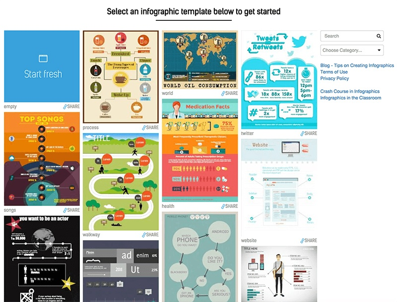

Getting more followers on your social media accounts takes a lot of investment, but what if there are growth hacks you could use instead?
We will be giving you 7 growth hacks to help you achieve your goal. These work with the content you already have, so it is more of an enhancement of your content marketing. We will be guiding you on what points to focus on.
#1 Use Infographics

Making use of infographics helps you not only in your brand marketing but also as a growth hack in garnering more followers as well. It is a fun, creative, and interesting way of communicating information to your followers. It is easy to understand since information is brief and concise. It is also very easy to save and share to other social media platforms.
There are tools available online to help you create infographics to gain more followers. There are flexible packages which you can use according to your needs. Most of these are created by professionals for you to design your infographic quick and easy. Most of these tools are free of cost while some offer more features when you choose to pay for their subscription.
Users are more attracted with infographics compared with long posts, which is why it is an excellent method to get more followers. Make sure that your infographics include a watermark of your brand’s name and logo. Your infographics may be shared through social media links, so make sure that you include your social media accounts too.
#2 Feature Reviews
Another interesting growth hack you could use to get more social media followers is featuring reviews about your brand, your product, your customer service, or your blog or website. Bright Local conducted a Local Consumer Review Survey in 2015 revealing that a star rating is a prime factor used by consumers to evaluate a business. 92% of them read online reviews and 40% of consumers read 1-3 reviews before making an opinion. 68% state that positive reviews enable them to trust a local business more.
Having these reviews is one thing, posting them on your social accounts is another thing. There are sharing tools you can use for this, like Zuberance or Social Toaster. Share your Yelp reviews on your social media accounts as well. Most product and service review sites have easy sharing features nowadays, and it only takes a few clicks for you to do it.
As mentioned earlier, customer service is something that people can make a review of and incidentally one of the most effective sources of positive reviews as well. It helps build your trust and credibility with your customers. It also allows those who are still deciding to avail your product to make a decision.
#3 Post Account Milestones
Letting people know about important milestones in your social media accounts is another growth hack you could try. Use online tools that measure different aspects of your account. There are different metrics available to keep track of significant data worth posting online. Some of these measures the number of followers, and posts with the most number of engagements among other things.
You can announce achieving a specific number of followers. Acknowledgement shows that you value your followers who gave value to your account. Make it a big deal for them to have contributed to that milestone. You can even express your gratitude by giving out promo codes when they avail your product or service.
This growth hack can enable you to enhance the posts you have identified with the most number of engagements. Let your followers know that you know which topics interest them, and come up with content to supplement or complement popular posts. Your followers will appreciate that you understand what they want and will help you be more popular among their colleagues for the expansion of your network.
#4 Collaborate with other Brands
Collaboration is another social media growth hack you can do to get more followers. It enables your brand to gain more attention to users even beyond your niche. It also helps both of you to get access to each other’s followers and address to their needs according to your brands offering. It also helps you expand your market to those who you may not have identified previously to be your consumers.
Think of good negotiation points you can offer to the other party when you apply this growth hack. You propose to work with them because you see something that they are offering that you want to incorporate into your marketing for a specific period of time. Offer a win-win situation for you and your potential business partner to provide equitable solutions to your business concerns, especially in your mutual follower growth.
#5 Link Your Content in Your Posts
When others share your links, it increases your search rankings online. Providing a link to your posts from your own content gets a healthy circulation around your social media account, and your brand as well. In line with the consistency of your brand, it enables your current and potential followers to refresh and learn about you.
This growth hack is not merely a repetition of the way you present your content. If you do this, people may think that you are impersonal with the way you handle your account. It also makes them feel that you don’t give that much value to them as your followers. When new visitors go through your social media account, they may also hesitate as you don’t have that much interesting content to offer.
Select key phrases in your new post that can be cross-linked to another post in your account. You can also do this on your blog or website, and cross-link it with exclusive content in your social media accounts. Keep track of your posts and the keywords you use in your posts so you could refer to this information when you make your future posts.
#6 Create Social Campaigns
Coming up with a social campaign is another growth hack you can consider in getting more social media followers. This is different from instances when you give calls to action. In this case, you leverage on the curiosity and vanity of your users to provide content specific to them. This gives them a sense of ownership with the information you provided.
Customization is the key in this growth hack. You can be creative by getting third parties to provide quizzes and predictions for example. Maintain the consistency with this promotional tool with your brand identity. Upon receiving the results, you can encourage them to share it by providing share buttons for different social media platforms.
Sharing the result from this growth hack opens doors for your brand to networks of the users who made use of your campaign. These users will hear and learn something about your brand. Again, make sure that your campaigns are consistent with your brand so it will be easy even for those who heard your brand for the first time to remember it.
#7 Use a Scheduling and Automation Tool
Using a scheduling and automation tool is one of the most effective growth hack for you to get more social media followers. You get to select the type of features you want to avail suited to your brand’s needs. It helps you manage your content updates on various social media platforms. It also helps you expand your network and interactions with your followers and fans.
JARVEE is one of the growth hacking tools you can use to get more followers on your social media accounts. They have been in the industry of serving various brands and businesses for years. They work with a global team of highly competent developers to help you achieve your social media goals. They cater to major social media platforms which currently have the most engagements.
This growth hack expands your network since it has features to help you be part of groups in your niche. It also helps you to find people to follow, contact members easily as well. Aside from the aforementioned services, you can also read on tips to help you manage your social media accounts and blogs.
Wrapping it up
These 7 actionable growth hacks will help you to start getting more followers in your social media accounts. It’s great that you recognize that your number of followers is important to achieve your brand’s goals. Now, check on what resources you have in your account and develop them to garner more followers to actively engage with your accounts.
Jennifer Fernando says
Awesome post. Thank your for sharing such a nice article.
Milana says
Hello Adam!
I had some of them somewhere in mind as possible ideas, but it’s good to have all these in one place and to start using them one by one. So far I started with Jarvee free trial and I think this is a keeper. It will save me so much time.
I will use the time that I save with Jarvee to create better content for my posts, because there is a lot of space for improvement!But usually I have strict deadlines and then I release it even if I’m not completely happy with the outcome. Thanks you guys for sharing these with us.
Adam says
it’s our pleasure Milana
Jennifer Fernando says
Awesome post. Thank your for sharing such a nice article.